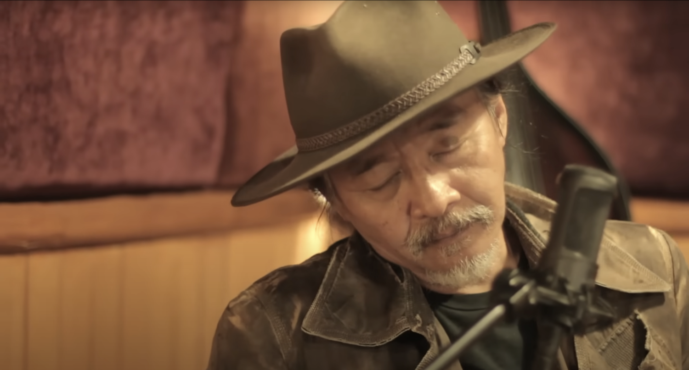
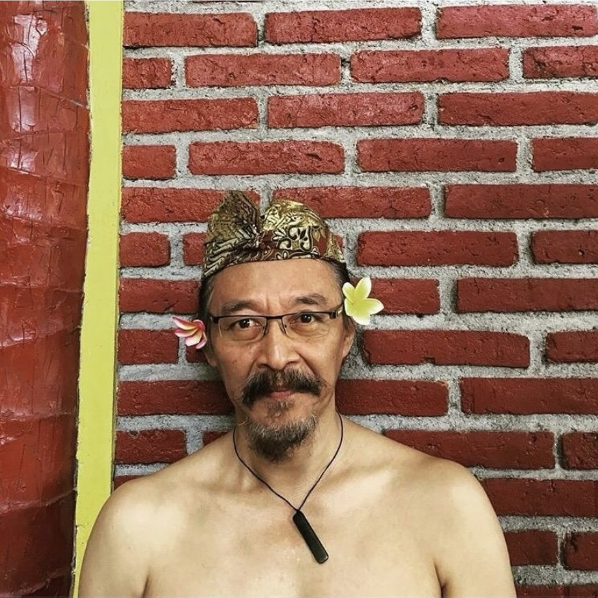
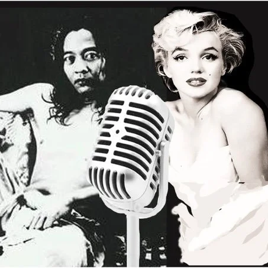
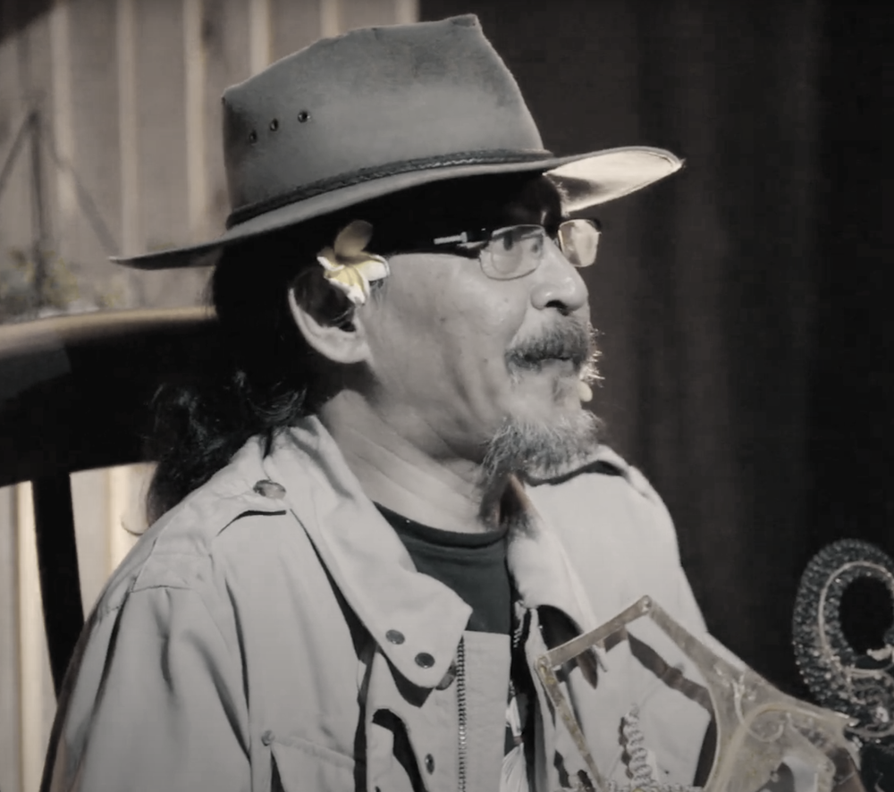
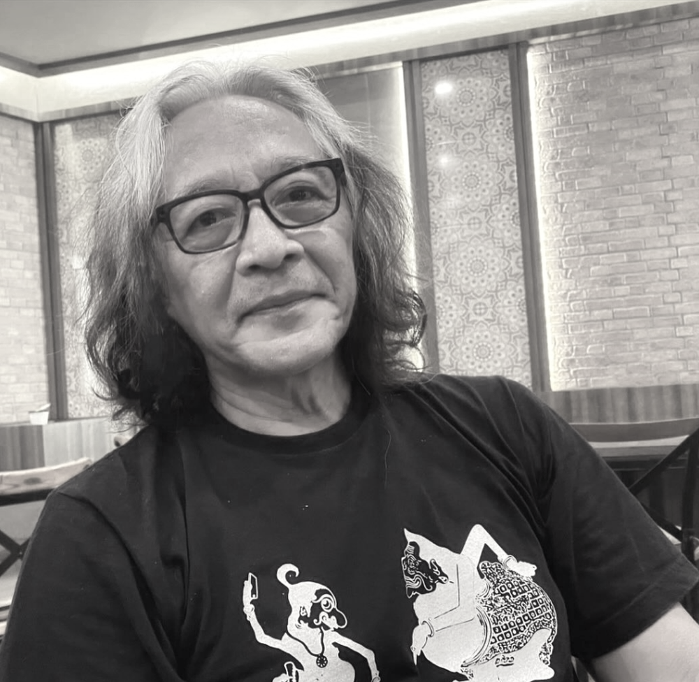

The future of Indonesia lies in the past.
The future of Indonesian music is in the gamelan. But where is the gamelan?
Since my first album, so many people have asked me why I did not use the gamelan in 'Titi Kolo Mongso'. And the big question from each potential sponsor here is 'where is the gamelan for ethnic music?'. I am tired of answering that my software of gamelan, the spirit of gamelan, will be there without needing the physic of gamelan.
I was born in gamelan. Gamelan is a unity in my blood, so I don't need to show off bringing the gamelan physically to the modern orchestra. Everything that I touch, whether it is the saxophone, violin etc, will always consist of the gamelan spirit, even my vocals when I sing music from abroad.
I said I differ to… those Indonesian musicians who learnt from the foundation of Western music… and so they need the gamelan physically when making 'ethnic' music.



